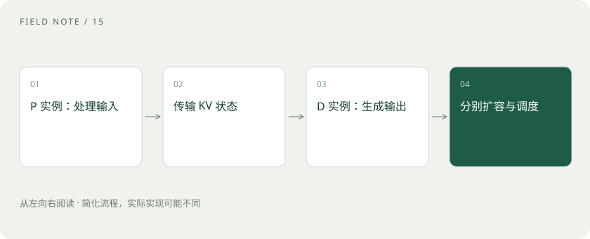

先读哪些知识
先用一个类比理解
餐厅把备菜和出餐分工，能分别安排人手，也会增加传菜与协调。若传菜太慢，分工未必比一体完成更好。
类比只帮助建立直觉，不等同于技术的完整机制。
一图看懂

为什么想要分离
长输入处理与持续生成的资源特征不同。混合运行时，调度和资源竞争可能影响首 Token 延迟或生成间隔。分离为两阶段独立调优、扩容与调度提供了空间。
关键不是两个字母，而是传输和调度
Prefill 完成后，Decode 实例需要相应的 KV 状态。网络带宽、传输实现、兼容性和额外排队都影响结果。系统还要处理实例选择、失败恢复以及资源利用不平衡。
如何判断适不适合
比较相同模型、硬件预算、输入输出分布和到达流量下的端到端指标。观察 TTFT、生成间隔、满足延迟目标的吞吐与成本。低并发或短输入场景中，通信与复杂度可能抵消收益。
放进真实场景
SCENARIO
假设业务既有超长文档分析，又有正在流式生成的问答，可以评估隔离阶段是否缓解干扰；不能仅凭架构图就宣布吞吐翻倍。
别踩这个误区
PD 分离不是训练和推理分离，也不是自动把一个大模型切成两个不同模型。具体实现能力应以对应引擎版本为准。
想一想
网络很慢时，PD 分离还能保证更快吗？
不能。KV 传输与排队可能使端到端性能变差。
关联阅读
资料与边界
本文为原创知识讲解。类比和图示经过简化；示例数字不代表实测或报价。整理日期：2026-11-04。文末列出对应技术的原始资料，具体功能与版本支持请以原文为准。